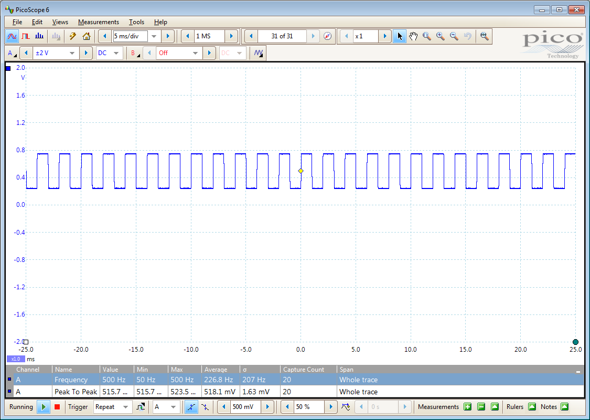
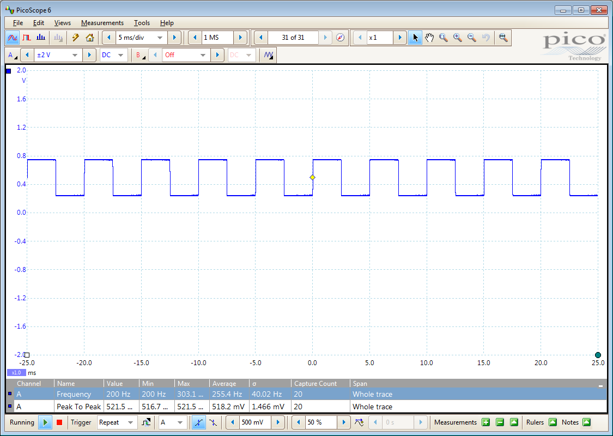
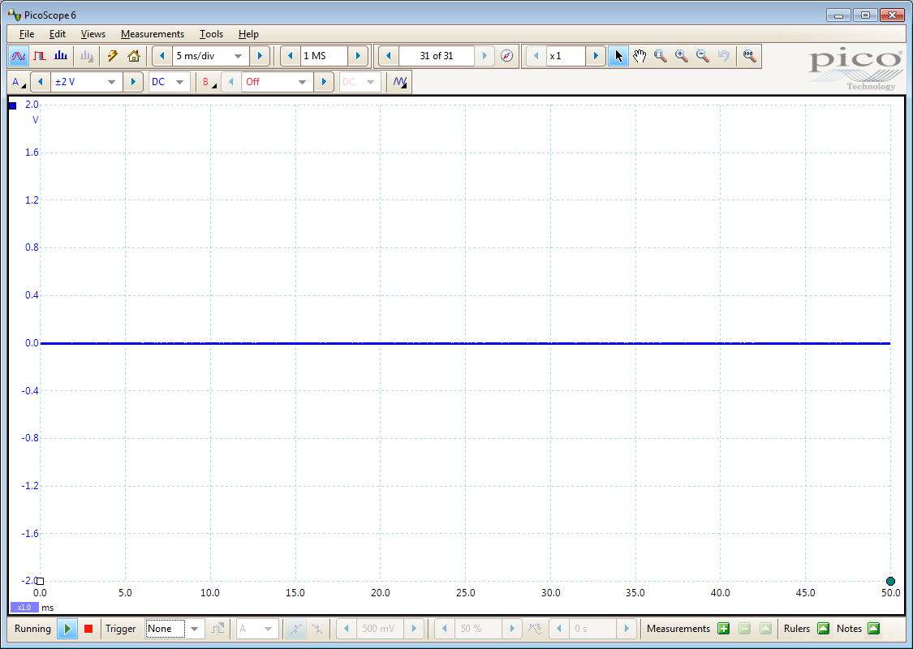
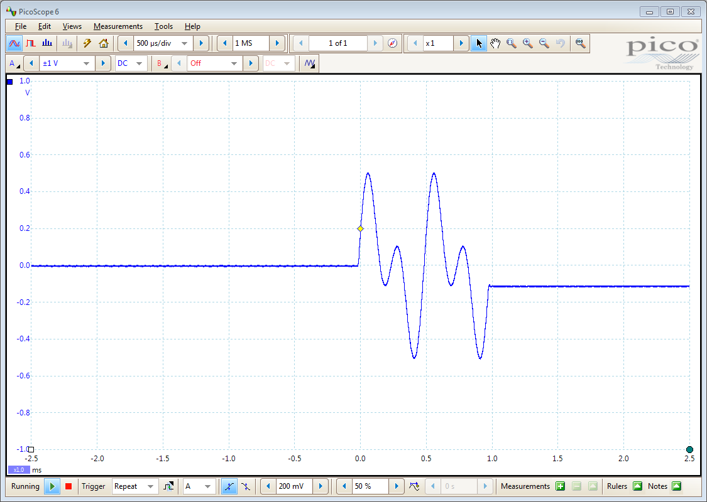

PicoScope 4000 Series Instrument Driver Signal Generator Example
Code for communicating with an instrument in order to control the signal generator.
This is a modified version of a machine generated representation of an instrument control session using a device object. The instrument control session comprises all the steps you are likely to take when communicating with your instrument.
These steps are:
- Create a device object
- Connect to the instrument
- Configure properties
- Invoke functions
- Disconnect from the instrument
To run the instrument control session, type the name of the file, PS4000_ID_Sig_Gen_Example, at the MATLAB command prompt.
The file, PS4000_ID_SIG_GEN_EXAMPLE.M must be on your MATLAB PATH. For additional information on setting your MATLAB PATH, type 'help addpath' at the MATLAB command prompt.
Example: PS4000_ID_Sig_Gen_Example;
Description: Demonstrates how to set properties and call functions in order to control the signal generator output of a PicoScope 4000 Series Oscilloscope.
Copyright: © 2014-2017 Pico Technology Ltd. See LICENSE file for terms.
Contents
- Test Setup
- Clear Command Window and Close any Figures
- Load Configuration Information
- Device Connection
- Obtain Signal Generator Group Object
- Function Generator - Simple
- Function Generator - Sweep Frequency
- Turn Off Signal Generator
- Arbitrary Waveform Generator - Set Parameters
- Arbitrary Waveform Generator - Simple
- Turn Off Signal Generator
- Arbitrary Waveform Generator - Output Shots
- Turn Off Signal Generator
- Disconnect
Test Setup
For this example the 'AWG' connector of the oscilloscope was connected to channel A on another PicoScope oscilloscope running the PicoScope 6 software application. Images, where shown, depict output, or part of the output in the PicoScope 6 display.
Note: The various signal generator functions called in this script may be combined with the functions used in the various data acquisition examples in order to output a signal and acquire data. The functions to setup the signal generator should be called prior to the start of data collection.
Clear Command Window and Close any Figures
clc;
close all;
Load Configuration Information
PS4000Config;
Device Connection
% Check if an Instrument session using the device object |ps4000DeviceObj| % is still open, and if so, disconnect if the User chooses 'Yes' when prompted. if (exist('ps4000DeviceObj', 'var') && ps4000DeviceObj.isvalid && strcmp(ps4000DeviceObj.status, 'open')) openDevice = questionDialog(['Device object ps4000DeviceObj has an open connection. ' ... 'Do you wish to close the connection and continue?'], ... 'Device Object Connection Open'); if (openDevice == PicoConstants.TRUE) % Close connection to device disconnect(ps4000DeviceObj); delete(ps4000DeviceObj); else % Exit script if User selects 'No' return; end end % Create a device object. ps4000DeviceObj = icdevice('picotech_ps4000_generic.mdd'); % Connect device object to hardware. connect(ps4000DeviceObj);
Copyright © 2014-2017 Pico Technology Ltd. All rights reserved.
PicoScope 4000 Series MATLAB Instrument Driver
Number of units found: 1
Serial number(s): AW737/105
Opening PicoScope 4000 Series device...
Instrument Device Object Using Driver : picotech_ps4000_generic.mdd
Instrument Information
Type: Oscilloscope
Manufacturer: Pico Technology Ltd.
Model: PicoScope 4000 Series
Driver Information
DriverType: MATLAB generic
DriverName: picotech_ps4000_generic.mdd
DriverVersion: 1.1.9
Communication State
Status: open
Setting Device Parameters...
Default Channel Setup:-
-----------------------
ChannelA:-
Enabled: True
Coupling: DC
Range: 5V
ChannelB:-
Enabled: True
Coupling: DC
Range: 5V
Turning off trigger...
Instrument Device Object Using Driver : picotech_ps4000_generic.mdd
Instrument Information
Type: Oscilloscope
Manufacturer: Pico Technology Ltd.
Model: PicoScope 4000 Series
Driver Information
DriverType: MATLAB generic
DriverName: picotech_ps4000_generic.mdd
DriverVersion: 1.1.9
Communication State
Status: open
Default Block mode parameters:-
Timebase index : 11
Time Interval: 1200.0 ns
Number of pre-trigger samples: 0
Number of post-trigger samples: 1000000
Total number of samples: 1000000
Default Streaming mode parameters:-
Streaming interval: 1.00e-06 s
Streaming auto stop: 1
Default Signal generator parameters:-
Start frequency: 1000 Hz
Stop frequency: 1000 Hz
Offset voltage: 0 mV
Peak to Peak voltage: 2000 mV
Initialisation complete.
Connected to PicoScope 4000 Series device:-
Instrument Model: 4262
Batch/Serial Number: AW737/105
Analogue Channels: 2
Bandwidth: 5 MHz
Buffer memory: 16 MS
Maximum sampling rate: 10 MS/s
Signal Generator Type: Arbitrary Waveform Generator
Obtain Signal Generator Group Object
Signal Generator properties and functions are located in the Instrument Driver's signalGenerator group.
sigGenGroupObj = get(ps4000DeviceObj, 'Signalgenerator');
sigGenGroupObj = sigGenGroupObj(1);
Function Generator - Simple
Output a sine wave, 2000 mVpp, 0 mV offset, 1 kHz (uses preset values for offset, peak to peak voltage and frequency from the Signalgenerator groups's properties).
[status.setSigGenBuiltInSimple] = invoke(sigGenGroupObj, 'setSigGenBuiltInSimple', 0);

Function Generator - Sweep Frequency
Output a square wave, 500 mVpp, 500 mV offset, and sweep continuously from 500 Hz to 50 Hz in steps of 50 Hz.
% Configure property value(s). set(ps4000DeviceObj.Signalgenerator(1), 'startFrequency', 500.0); set(ps4000DeviceObj.Signalgenerator(1), 'stopFrequency', 50.0); set(ps4000DeviceObj.Signalgenerator(1), 'offsetVoltage', 500.0); set(ps4000DeviceObj.Signalgenerator(1), 'peakToPeakVoltage', 500.0); % Execute device object function(s). % Wavetype : 1 (ps4000Enuminfo.enWaveType.PS4000_SQUARE) % Increment : 50.0 (Hz) % Dwell Time : 1 (s) % Sweep Type : 1 (ps4000Enuminfo.enSweepType.DOWN) % Operation : 0 (ps4000Enuminfo.enPS4000OperationTypes.PS4000_OP_NONE) % Shots : 0 % Sweeps : 0 % Trigger Type : 0 (ps4000Enuminfo.enSigGenTrigType.SIGGEN_RISING) % Trigger Source : 0 (ps4000Enuminfo.enSigGenTrigSource.SIGGEN_NONE) % Ext. Threshold : 0 [status.setSigGenBuiltIn] = invoke(sigGenGroupObj, 'setSigGenBuiltIn', 1, 50.0, 1, 1, 0, 0, 0, 0, 0, 0);
extInThreshold =
0


Turn Off Signal Generator
Sets the output to 0 V DC
[status.setSigGenOff] = invoke(sigGenGroupObj, 'setSigGenOff');

Arbitrary Waveform Generator - Set Parameters
Set parameters (2000 mVpp, 0 mV offset, 2000 Hz frequency) and define an arbitrary waveform.
% Configure property value(s). set(ps4000DeviceObj.Signalgenerator(1), 'startFrequency', 2000.0); set(ps4000DeviceObj.Signalgenerator(1), 'stopFrequency', 2000.0); set(ps4000DeviceObj.Signalgenerator(1), 'offsetVoltage', 0.0); set(ps4000DeviceObj.Signalgenerator(1), 'peakToPeakVoltage', 1000.0);
Define an Arbitrary Waveform - values must be in the range -1 to +1. Arbitrary waveforms can also be read in from text and csv files using dlmread and csvread respectively or use the importAWGFile function from the PicoScope Support Toolbox.
Any AWG files created using the PicoScope 6 application can be read using the above method.
awgBufferSize = get(sigGenGroupObj, 'awgBufferSize');
x = 0:(2*pi)/(awgBufferSize - 1):2*pi;
y = normalise(sin(x) + sin(2*x));
Arbitrary Waveform Generator - Simple
Output an arbitrary waveform with constant frequency (defined above).
% Arb. Waveform: y (defined above) [status.setSigGenArbitrarySimple] = invoke(sigGenGroupObj, 'setSigGenArbitrarySimple', y);

Turn Off Signal Generator
Sets the output to 0 V DC
[status.setSigGenOff] = invoke(sigGenGroupObj, 'setSigGenOff');
Arbitrary Waveform Generator - Output Shots
Output 2 cycles of an arbitrary waveform using a software trigger.
Note that the signal generator will output the value coresponding to the first sample in the arbitrary waveform until the trigger event occurs.
% Increment : 0 (Hz) % Dwell Time : 1 (s) % Arb. Waveform : y (defined above) % Sweep Type : 0 (ps4000Enuminfo.enSweepType.PS4000_UP) % Operation : 0 (ps4000Enuminfo.enPS4000OperationTypes.PS4000_OP_NONE) % Shots : 2 % Sweeps : 0 % Trigger Type : 0 (ps4000Enuminfo.enSigGenTrigType.SIGGEN_RISING) % Trigger Source : 4 (ps4000Enuminfo.enSigGenTrigSource.SIGGEN_SOFT_TRIG) % Ext. Threshold : 0 [status.setSigGenArbitrary, dwell] = invoke(sigGenGroupObj, 'setSigGenArbitrary', 0, 1, y, 0, 0, 0, 2, 0, 0, 4, 0); % Trigger the AWG % State: 1 (a non-zero value will trigger the output) [status.ps4000SigGenSoftwareControl] = invoke(sigGenGroupObj, 'ps4000SigGenSoftwareControl', 1);

Turn Off Signal Generator
Sets the output to 0 V DC
[status.setSigGenOff] = invoke(sigGenGroupObj, 'setSigGenOff');
Disconnect
Disconnect device object from hardware.
disconnect(ps4000DeviceObj); delete(ps4000DeviceObj);
Connection to PicoScope 4262 with serial number AW737/105 closed successfully. Libraries unloaded successfully.